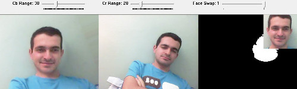

AutoPoser: automatic image correction for video conferences
May 3, 2013Hey guys! Thanks for voting and choosing me as the first-day winner of the EE 371R Ram’s Horn Best Project Award. This was a fun project to present. In this post, I’ll present the application, AutoPoser, and briefly explain how it works. The source code and the executable files are attached to this post.
What is AutoPoser?
AutoPoser is a program that automatically corrects images of the participants in video conferences. What it does is that it corrects your posture if you’re leaning and puts a smile on your face.

Why?
Because we might not always want to be viewed during video calls! We may feel overwhelmed by the length or content of a video conference, and we might want the other participants to think that we are still pretty interested. AutoPoser helps you alleviate the stress of being viewed, or is it? Who am I kidding; none of us will use it for anything but just having fun or mocking friends. :)
How does it work?
The program consists of three main stages: initialization, posture correction, and ideal image superimposition. In the initialization step, the initial location of the face is detected by using cascade classifiers and the ideal pose of the user is captured. The user is assumed to be sitting up straight and giving an ideal pose. For posture correction, the input image is first thresholded in YCbCr color space for skin color detection. Then, the skin-colored artifacts in the background are masked out using an elliptical mask around the face that detected in the previous frame. Finally, the main orientation of the head is calculated by using image moments, and the image is rotated to the opposite direction to zero out the leaning angle. In the ideal image superimposition step, the ideal face is aligned with the current face and superimposed on the current frame. For a seamless blending, I use a circular mask with smoothed edges as an alpha mask.